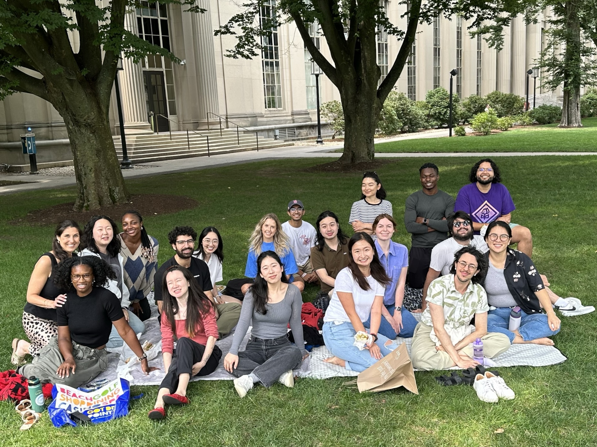

Lewis Lab, MIT, Summer 2025
Sleep Stage Classification With EEG-MRS
Research intern, MIT Summer Research Program
I worked in Professor Laura Lewis's lab on a study of neurochemical changes across sleep and arousal states. The project used simultaneous EEG and HERCULES-edited magnetic resonance spectroscopy to connect physiological sleep state labels with metabolite estimates in human brain data.
My main contribution was segmenting EEG recordings into sleep-stage windows aligned to MRS acquisition timing. I helped classify artifact-free EEG epochs, organize the resulting labels, and use those labels to segment MRS data so metabolite estimates could be compared across arousal states with stronger signal-to-noise constraints.
The project sharpened how I think about human neuroscience data. EEG gives useful timing but limited spatial specificity, while MRS gives chemical information averaged across larger tissue volumes. Working with both made the measurement problem feel concrete: better models matter, but the field also needs better ways to capture the signals themselves.
Outcomes: MIT MSRP poster and study report. Poster Report Lab website